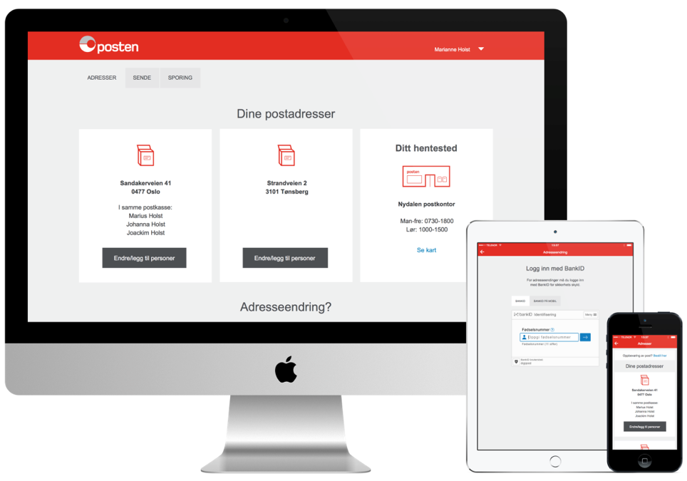
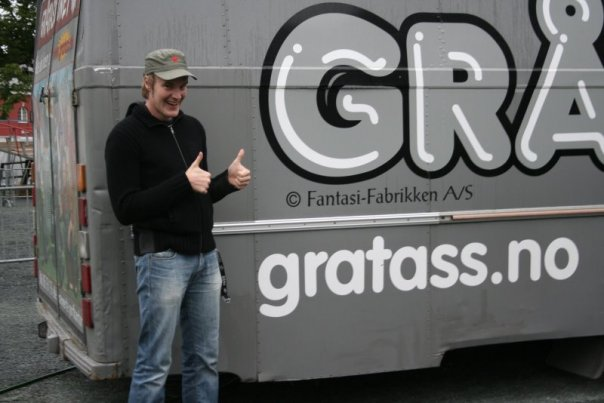

Full gass
med bremsene på!
Veien til en smidig organisasjon trenger hverken være dyr eller risikofylt
Hva snakker jeg egentlig om?

12 forretningsapplikasjoner
15 støtteapplikasjoner
4 produkteiere
5 interaksjonsdesignere
30 utviklere
Løpende produksjonssettinger
Utvikling i linjen
Automatisert og robust infrastruktur
But how…?
Vi har aldri tatt på oss risiko
Et tilbakeblikk…

Premisser
Tydelige forretningsmål
Målt på leveranse
Lov til å utfordre
Tverrfaglig
Veien til suksess
Fokus på smidighet
Frihet til å løse problemer
Folk som får tillit
tar ansvar
Kultur for kvalitet
Uten fordeling av skyld
Det er bare å starte!